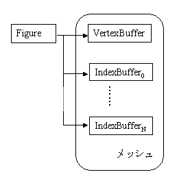
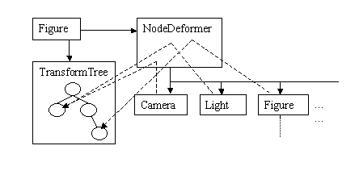
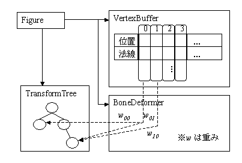
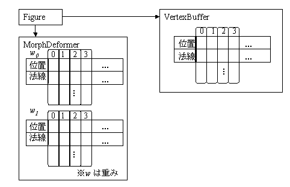
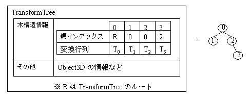
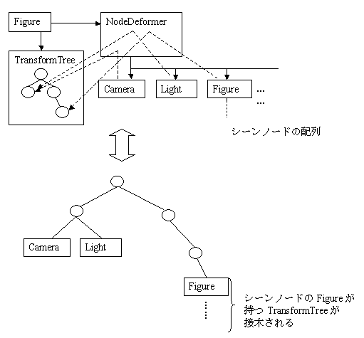

|
|||||||||
| 前のパッケージ 次のパッケージ | フレームあり フレームなし | ||||||||
参照先:
説明
| インタフェースの概要 | |
|---|---|
| GraphicsEruption | com.docomostar.opt.ui.eruption パッケージによる 3D 描画を Star の描画フレームワーク内で行うための機能を提供するインタフェースです。 |
| NodeDeformerNode | シーンノード機能を提供するインタフェースです。 |
| クラスの概要 | |
|---|---|
| Action | Animatable のアニメーションを表現するクラスです。 |
| ActionController | Action オブジェクトに対して細かい制御を行うクラスです。 |
| ActionTable | MCA ファイルから読み込まれた複数の Action を一括管理するためのクラスです。 |
| Animatable | 関連付けられた Action により、アニメーションを行う抽象クラスです。 |
| Appearance | IndexBuffer が表すサブメッシュに対するレンダリング属性を扱うクラスです。 |
| Bone | シーングラフ内でアンカーの役割を果たすクラスです。 |
| BoneDeformer | ボーンアニメーションを扱うクラスです。 |
| Camera | メッシュや Figure の描画に用いるカメラおよびフォグを表します。 |
| Collision3D | 球体を表す GeometricShape に関する衝突判定および可視判定を行うためのクラスです。 |
| EffectSource | エフェクトの発生点を表すクラスです。 |
| Figure | シーンの構成要素を集約するクラスです。 |
| GeometricShape | 幾何形状を表すクラスです。 |
| Graphics3D | レンダリング全般の機能を提供するクラスです。 |
| IndexBuffer | VertexBuffer とともに用いて Figure 内のサブメッシュを構成するクラスです。 |
| IntersectionAttributes | Figure, VertexBuffer に対してピッキングを行うための API とピッキングの結果を取得するためのクラスです。 |
| Light | ライトを表すクラスです。 |
| Loader | データファイルをロードするためのクラスです。 |
| LoaderParam | Loader の LoaderParam を引数として使うメソッドで用いるクラスです。 |
| MorphDeformer | Figure.setMorphDeformer(MorphDeformer) によって Figure に関連付けられ、モーフィングアニメーションを担当するクラスです。 |
| NodeDeformer | NodeDeformerNode を実装するクラスのオブジェクトをシーンノードとして子ノードに持ち、それらのノードアニメーション実行単位となるクラスです。 |
| Object3D | ほとんどのクラスの基となる抽象クラスです。 |
| Particle | パーティクルを表すクラスです。 |
| Pick | ピック処理を行うクラスです。 |
| RegionF | 矩形領域を表すクラス(float)です。 |
| RegionI | 矩形領域を表すクラス(int)です。 |
| Texture | テクスチャを表すクラスです。 |
| TextureTable | MCT ファイルからロードされた Texture オブジェクトを一括管理するためのクラスです。 |
| TrackBall | トラックボール処理を行うクラスです。 |
| Transform | 4 x 4 の変換行列を表すクラスです。 |
| TransformTree | TransformTree は Figure と対になり、シーングラフを構成します。 |
| Util3D | 頻繁に用いられる算術演算を集めたクラスです。 |
| Vector3D | 3 次元ベクトルを表すクラスです。 |
| VertexBuffer | 頂点データを集約するクラスです。 |
| 例外の概要 | |
|---|---|
| IllegalDataException | データフォーマットに異常があったことを表すシグナルです。 |
3D グラフィックスのオプション API を定義します。
このマニュアルの読者に期待される前提知識は、以下の通りです。
本マニュアルの理解を深めるためには、以下に示す関連ドキュメント「MascotCapsule eruption プログラマーズマニュアル」を合わせて参照することを推奨します。
関連ドキュメントとしては、以下のものが用意されています。
これらのマニュアルは、株式会社エイチアイの MascotCapsule 開発者サイト MascotCapsule Developer Network (MCDN) より入手できます。
本書に記載されている会社名、商品名、製品名等は、一般に各社の登録商標または商標です。(本書中では TM 等の表示はしてありません。)
本版は MascotCapsule eruption Java API (Ver.1.2.0.1) に基づいて記述されています。
MascotCapsule eruption のオブジェクトの関連について、次に示します。
Figure はシーンを構成する要素を集約するクラスで、要素として VertexBuffer, IndexBuffer, NodeDeformer, BoneDeformer, MorphDeformer, TransformTree, Camera, GeometricShape, Appearance を持つことができます。
VertexBuffer と IndexBuffer は自身のメッシュを定義し、VertexBuffer は使用する頂点の情報を、IndexBuffer はサブメッシュとして使用する頂点とその並び順を表します。一つの Figure は一つの VertexBuffer しか持つことはできませんが、対応する IndexBuffer は複数持つことができ、個々の IndexBuffer をサブメッシュとして全体で Figure のメッシュを表しています。Figure がメッシュを持つか否かは Figure 作成時に決めます。




TransformTree はシーングラフやボーンの階層構造を表します。概念的にはノードとして Transform を持つ木です。
TransformTree は以下の図に示すように内部表現として一次元配列のようなフラットな構造を持ち、各ノードはインデックス経由で参照されます。
ノード間の親子関係は子ノードが親ノードのインデックスを保持することで実現しています。


|
|||||||||
| 前のパッケージ 次のパッケージ | フレームあり フレームなし | ||||||||
NTT DOCOMO,INC.
本製品または文書は著作権法により保護されており、その使用、複製、再頒布および逆コンパイルを制限するライセンスのもとにおいて頒布されます。NTTドコモ（その他に許諾者がある場合は当該許諾者も含めて）の書面による事前の許可なく、本製品および関連する文書のいかなる部分も、いかなる方法によっても複製することが禁じられます。フォントを含む第三者のソフトウェアは、著作権法により保護されており、その提供者からライセンスを受けているものです。
Sun、Sun Microsystems、Java、J2MEおよびJ2SEは、米国およびその他の国における米国 Sun Microsystems,Inc.の商標または登録商標です。サンのロゴマークは、米国 Sun Microsystems, Inc.の登録商標です。
FeliCaは、ソニー株式会社が開発した非接触ICカードの技術方式です。FeliCaは、ソニー株式会社の登録商標です。
「ｉモード」、「ｉアプリ／アイアプリ」、「ｉ-αppli」ロゴ、「DoJa」はNTTドコモの商標または登録商標です。
その他記載された会社名、製品名などは該当する各社の商標または登録商標です。